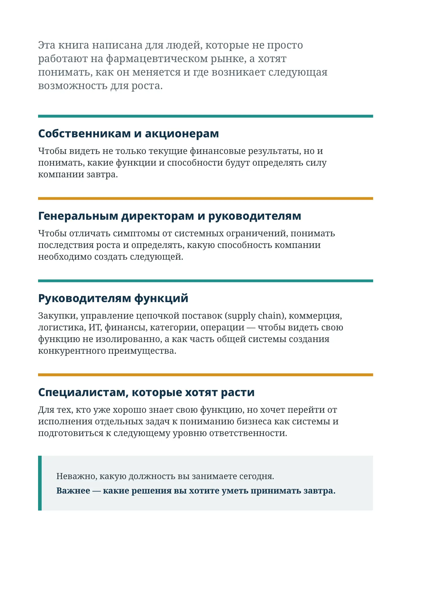

Для кого эта книга
Эта книга написана для людей, которые не просто работают на фармацевтическом рынке, а хотят понимать, как он меняется и где возникает следующая возможность для роста.
Собственникам и акционерам
Чтобы видеть не только текущие финансовые результаты, но и понимать, какие функции и способности будут определять силу компании завтра.
Генеральным директорам и руководителям
Чтобы отличать симптомы от системных ограничений, понимать последствия роста и определять, какую способность компании необходимо создать следующей.
Руководителям функций
Закупки, управление цепочкой поставок (supply chain), коммерция, логистика, ИТ, финансы, категории, операции — чтобы видеть свою функцию не изолированно, а как часть общей системы создания конкурентного преимущества.
Специалистам, которые хотят расти
Для тех, кто уже хорошо знает свою функцию, но хочет перейти от исполнения отдельных задач к пониманию бизнеса как системы и подготовиться к следующему уровню ответственности.